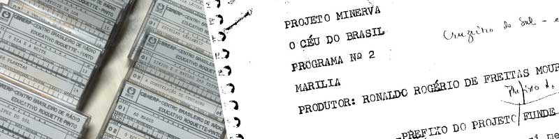

Este site tem como objetivo publicar e tornar disponíveis os programas de rádio “O Céu do Brasil”, produzidos pelo Projeto Minerva, da Rádio MEC.
Entre novembro de 1978 e junho de 1979 foram ao ar 30 programas com roteiros escritos por Ronaldo R. F. Mourão e gravados com a locução do jornalista Eliakim Araújo e outros
locutores não identificados.
Esta série de programas teve o pioneirismo no que se refere a uma série que tratava de uma variedade de temas da Astronomia divulgada pelo rádio.
Durante a assembleia do III SNEA, em outubro de 2014, foi proposta e aprovada a
inserção de uma nota biográfica de Ronaldo R. F. Mourão nas Atas do evento, falecido no
mesmo ano, no dia 25 de julho de 2014, aos 79 anos, no Rio de Janeiro (RJ), vítima de um
AVC.
Como editor das Atas, coube ao Prof. Dr. Paulo S. Bretones da Universidade Federal de São Carlos escrever esta homenagem.
Na década de 1970, Ronaldo R. F. Mourão foi convidado pelo Projeto Minerva para produzir a série "O Céu do Brasil".
Visando conversar sobre o contexto da produção do programa, o Prof. Dr. Paulo S. Bretones visitou o astrônomo
em sua residência no Rio de Janeiro em 26 de novembro de 2011.
Ronaldo R. F. Mourão foi um dos astrônomos brasileiros mais importantes e sua atividade de divulgação por meio dos artigos,
livros e entrevistas inspirou toda uma geração, motivando muitos a seguirem a carreira de astrônomo.
Com uma longa cabeleira, sua característica marcante, com voz suave e afável tratava as pessoas com muita atenção e carinho e com um sorriso nos lábios.
Ronaldo Rogério de Freitas Mourão nasceu no Rio de Janeiro - RJ em 25 de maio de 1935.
Foi um dos astrônomos brasileiros mais importantes e sua atividade de divulgação por
meio dos artigos, livros e entrevistas inspirou toda uma geração, motivando muitos a
seguirem a carreira de astrônomo.
Formou-se em Física pela Universidade do Estado da Guanabara (atual UERJ) em
1960. Em 1967 concluiu o doutorado na Universidade de Paris (Sorbonne) com estágios no
Observatoire du Pic-du-Midi, Observatoire de Haute-Provence, Observatoire de Paris e
Observatoire Royal de Belgique.
Ingressou no Observatório Nacional como auxiliar de Astrônomo em 1956, foi chefe
da Divisão de Equatoriais (1968-1975) e Diretor da Divisão de Astronomia (1975-1976).
Pesquisador do CNPq foi um dos fundadores da Sociedade Astronômica Brasileira em
1974, além de idealizador, fundador (1985) e primeiro diretor do Museu de Astronomia e
Ciências Afins (MAST). Também foi um dos fundadores do Clube de Astronomia do Rio de
Janeiro (CARJ) em 1976.
Publicou 98 livros, dentre eles o Dicionário Enciclopédico de Astronomia e
Astronáutica e mais de mil ensaios em revistas e jornais. Manteve uma coluna semanal
durante mais de vinte e cinco anos, no Jornal do Brasil e outros jornais e revistas de
divulgação científica. Em 1979, recebeu o Prêmio José Reis de divulgação científica, do
CNPq.
Suas principais contribuições astronômicas foram no campo das estrelas duplas,
asteroides, cometas e técnicas de astrometria fotográfica. Descobriu vários asteroides em
observações realizadas no Observatório Europeu Austral (ESO), em La Silla, no Chile e foi o
primeiro brasileiro a ter um asteroide com seu nome.
Foi membro do Instituto Histórico e Geográfico Brasileiro (IHGB), desde 2001, da
Academia Brasileira de Filosofia e da Academia Luso-Brasileira de Letras desde 1999, entre
outras instituições.
Recebeu o Prêmio “Suprema Honra ao Mérito” da Universidade Soka, em Tóquio,
Japão, que equivale ao título de Doutor Honoris Causa e o Prémio Cultura e Paz da Soka
Gakkai International (SGI) em 2005.
Também foi membro das Comissões de Estrelas Duplas Visuais, Pequenos Planetas e
História da Astronomia da União Astronômica Internacional (IAU).
Pessoalmente fui muito influenciado por seus artigos e entrevistas em jornais, rádios e
TVs. Nos encontramos em vários eventos e o visitei em diversas oportunidades, sendo que em
uma delas (2011) gravamos uma entrevista.
Nessas ocasiões sempre perguntava sobre minhas atividades, me incentivava e me
presenteava com um exemplar de mais um livro, dos muitos que publicou.
Com uma longa cabeleira, sua característica marcante, com voz suave e afável tratava
as pessoas com muita atenção e carinho e com um sorriso nos lábios que nunca vou esquecer.
Este site tem como objetivo publicar e tornar disponíveis os programas de rádio “O céu do Brasil”, produzidos pelo Projeto Minerva, da Rádio MEC.
Entre novembro de 1978 e junho de 1979 foram ao ar 30 programas com roteiros escritos por Ronaldo R. F. Mourão e gravados com a locução do jornalista Eliakim Araújo e outros locutores não identificados.
Esta série de programas teve o pioneirismo no que se refere a uma série que tratava de uma variedade de temas da Astronomia divulgada pelo rádio.

O Laboratório Aberto de Interatividade para Disseminação do Conhecimento Científico e Tecnológico (LAbI) da UFSCar atua na área de divulgação científica e,
em particular, em temas de educação em Astronomia. O objetivo, disponibilizando os áudios em um site da Internet, é de recuperação dos documentos e valorização
da memória na área. Além disso, muitos dos conteúdos ainda são atuais e podem permitir estudos na área de divulgação científica, em particular, pelo rádio.
O site está hospedado nos servidores da Universidade Federal de São Carlos (UFSCar). Além disso, a página também pode ser acessada pelo site do LAbI UFSCar
(http://www.labi.ufscar.br) que também é um projeto de divulgação científica.
Fiquei sabendo dos programas em 2009 em um almoço com Ronaldo Mourão no Rio de Janeiro, por ocasião de minha participação na Assembleia Geral da União Astronômica
Internacional (IAU) naquela cidade, quando me contou sobre a série de programas e que ainda tinha guardadas as fitas cassete com os programas gravados
Após isto, participando do evento de divulgação Científica (1ª Mostra de Metodologias de Divulgação Científica) realizado em setembro de 2009 na UFSCar, em conversa
com o Prof. Adilson de Oliveira, coordenador do LAbI, este sugeriu que digitalizássemos os áudios na UFSCar e disponibilizássemos em uma página da Internet para acesso
aos interessados.
Ainda em 2010, após contatos realizados com o Prof. Ronaldo Mourão, recebemos o conjunto de 12 fitas cassete por correio, juntamente com os roteiros dos programas
produzidos na época em que foram ao ar.
Estas fitas foram digitalizadas em arquivos de áudio e também em versão MP3 pelo Técnico Pedro Dolosic Cordebello da DAC-UFSCar. Neste período foram obtidas as
autorizações do Prof. Mourão, autor dos programas e do jornalista Eliakim Araújo, responsável pela locução à época das gravações.
Entre 26 e 28/11/2011, estive na residência do Prof. Ronaldo R. F. Mourão, na cidade do Rio de Janeiro (RJ) para uma entrevista e reunião. A entrevista bem como o levantamento
de documentos visaram o estudo do contexto da época da produção dos programas para a possível publicação de um trabalho a este respeito.
Também foram obtidos outros documentos da época como roteiros dos programas, nomes dos participantes dos programas (produção, locução, técnica, direção) e
contatos com os arquivos da Rádio MEC.
Após isto foram feitos muitos contatos com a Rádio MEC e com a Empresa Brasileira de Comunicação (EBC), responsável pelo acervo e autorização para uso e disponibilização
dos áudios em site da Internet, cuja cessão foi autorizada em dezembro de 2015.